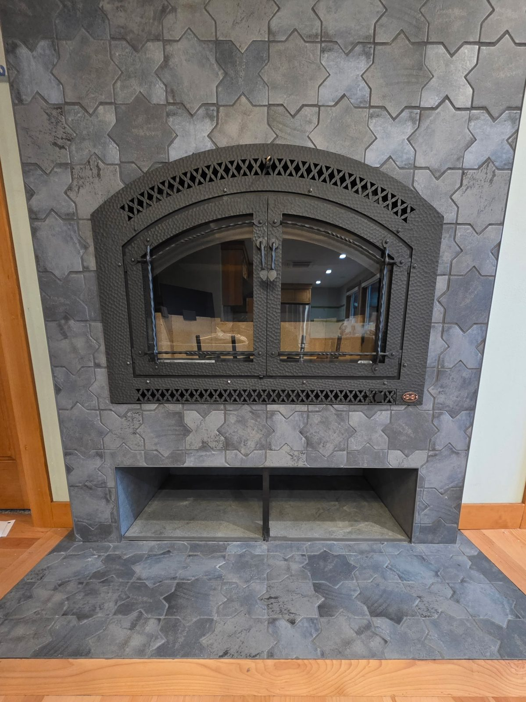
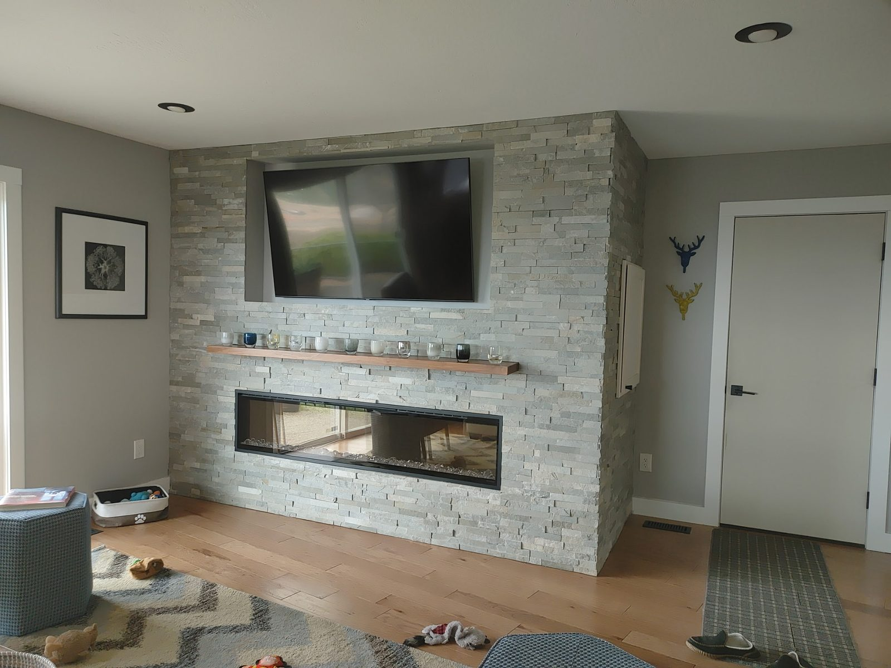

Recent Work
Tile Installation Projects
A look at recent tile installation work from DCB Construction in the Coeur d'Alene region.




Tile floors, walls, showers, backsplashes, and fireplace surrounds — installed right the first time for Coeur d'Alene homes.
Tile is the difference between a remodel that looks great for a year and one that looks great for 20. The substrate prep, waterproofing, and grout work are what determine whether tile lasts — and they're exactly the steps that get rushed by less-experienced installers. DCB Construction LLC has been installing tile in Coeur d'Alene homes for over a decade — ceramic, porcelain, natural stone, mosaic, large-format — across floors, walls, showers, backsplashes, and fireplace surrounds.
We work with the material you want and the substrate you have. We don't shortcut the underlayment, we don't paint over uneven subfloors, and we don't grout with the wrong product for the application.
A look at recent tile installation work from DCB Construction in the Coeur d'Alene region.


Most tile problems in Coeur d’Alene are not tile problems. They are substrate problems. The town’s older housing stock means we spend more time on what sits under the tile than on the tile itself, and that is where a tile floor is won or lost.
A wood subfloor that flexes underfoot will crack grout and then crack tile, no matter how good the setting material is. Homes built before floor systems were engineered with tile in mind often need the subfloor stiffened, an uncoupling membrane, or both. Bathrooms and entryways in the older parts of town frequently have several generations of flooring stacked on top of one another, and all of it has to come off before anyone can see what the actual condition is.
The second recurring issue is flatness. Plaster walls and floors that have settled over eighty years are rarely as flat as large-format tile needs them to be. A 12-inch tile forgives a lot; a 24-by-48 panel forgives almost nothing, and every bit of lippage shows up in raking light across the room. Where a substrate cannot be brought into tolerance we will say so and recommend a smaller format rather than set something that is going to look wrong for the next twenty years.
Entryways deserve their own mention here. Coeur d’Alene winters bring in moisture and road salt, and an entry floor set with the wrong mortar or finished with an unsealed grout will show it inside a single season.
Looking for other work in Coeur d'Alene? See: kitchen remodeling in Coeur d'Alene, bathroom remodeling in Coeur d'Alene, walk-in showers in Coeur d'Alene, or visit our Coeur d'Alene area page.
Almost always deflection, not the tile. If the floor structure moves underfoot, the tile and grout on top of it have to move too, and they are not able to. Older floor systems were framed before tile was a common finish, so the joists may be undersized or over-spanned for it. The fix is structural rather than cosmetic: stiffen the subfloor, add an uncoupling membrane, or both, before any tile goes down. Setting new tile over a floor that still flexes just repeats the failure.
Sometimes, but in older Coeur d'Alene homes it is usually the wrong call. Existing tile or vinyl can be a workable substrate if it is well bonded, flat and structurally sound. What we find more often is two or three layers of previous flooring, at which point you are adding height at every doorway, raising the floor above the toilet flange, and building on top of something nobody has actually inspected. Tearing out to a known substrate costs a day and removes the guesswork.
Labor generally runs $8 to $20 per square foot plus tile and materials. Standard 12x24 porcelain on a level subfloor sits around $10 to $12. Large-format tile, natural stone and complex patterns run higher. A kitchen backsplash is typically $800 to $1,800 installed and a bathroom floor $1,500 to $3,500. In older homes the line worth watching is subfloor prep, which we quote separately and explicitly rather than burying it.
Tile on its own does not usually need a permit, but the project it is part of often does. Properties inside the city go through the City of Coeur d'Alene and unincorporated parcels through Kootenai County. Where the tile is part of a bathroom or kitchen remodel that requires permitting, we handle it as part of the larger job.